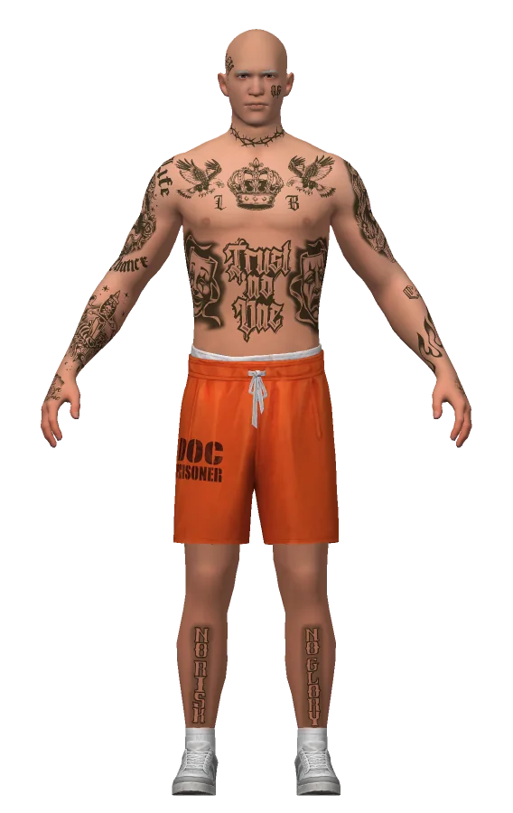

Tatuajes en ROB RUN: cuántos años de condena pide cada uno
El Tatuador de la prisión te tatúa cuando tu condena total llega a la cifra de cada tatuaje. Son 23, la serie No confíes en nadie de la pantalla Autoridad. El primero, Oportunidad, llega con 1 año, así que todos lo reciben al empezar el juego. El último, Revólveres, se desbloquea con 800 años junto con la máscara Silencio. La condena y los tatuajes sobreviven al wipe. Abajo puedes ver cada tatuaje en el personaje del juego.
Actualizado el . El juego está en acceso anticipado y cambia cada semana.
Tatuajes en el personaje

Toca un tatuaje de la lista y aparecerá en el personaje. Gíralo arrastrando con el ratón o el dedo, o con los botones.
La condena total aparece arriba a la derecha en la pantalla Autoridad del Tatuador.
Los 23 tatuajes en orden
El orden y los nombres son los de la pantalla Autoridad del juego. Las dos Águilas son tatuajes distintos: una con 60 años y otra con 120.
Cómo hacerte un tatuaje
- Ve a la prisión: acabas allí tras la redada federal o si te entregas a los federales. La condena de cada estado se suma a tu total: cómo se calcula la condena.
- Habla con el Tatuador de la prisión: abre la pantalla Autoridad con todos los tatuajes.
- Elige un tatuaje y pulsa «Tatúate». Si te falta condena, el botón muestra en rojo los años necesarios.
Cuántos estados hasta los 800 años
Un estado da como máximo 40 años y, desde el 17 de noviembre de 2026, no más de 40 años al día. Empezando con 1 año, llegar a 800 lleva 20 estados de 40 años. Pagar la deuda de Lenny suma +10 años por encima del tope: más detalles.
Los tatuajes y el wipe
La redada federal se lleva todo lo que tienes en el estado, pero no la condena: se suma a tu total y los tatuajes se quedan contigo. Cuándo es el wipe de tu estado.
Preguntas frecuentes
¿Cuántos tatuajes hay en ROB RUN?
Veintitrés, todos de la serie No confíes en nadie. El último, Revólveres, se desbloquea con 800 años de condena y con él llega la máscara Silencio.
¿Dónde me hago un tatuaje?
Con el Tatuador de la prisión, en la pantalla Autoridad. Cuando tu condena total llega a la cifra del tatuaje, pulsa «Tatúate».
¿Dónde va cada tatuaje?
Por todo el cuerpo: Oportunidad en el brazo derecho, la Corona y las dos Águilas en el pecho, Desafío y Revólveres en la espalda, Poder en la parte trasera de la cabeza y Veterano de la vieja escuela en la mejilla izquierda. Toca un tatuaje de la lista de arriba y el personaje se girará para mostrarlo.
¿Un tatuaje gasta condena?
No. El tatuaje se desbloquea cuando tu total llega a su cifra y el total no baja: con 83 años están desbloqueados los seis tatuajes hasta los 80 años.
¿Cuántos años pide la máscara Silencio?
800 años de condena total, igual que el último tatuaje, Revólveres.
¿Pierdo los tatuajes con el wipe?
No. La condena total y los tatuajes se conservan; solo desaparece lo que tenías en el estado.
Más sobre ROB RUN
- Calculadora de condena
- Cómo se calcula la condena
- Temporizador del wipe
- Cambiar de servidor y jugar con amigos
- Guía para principiantes
- Calculadora de ruleta
- Guías
Lista, orden y nombres de los tatuajes: archivos del juego (serie No confíes en nadie). Años que pide cada uno y la máscara con 800: capturas de la pantalla Autoridad del juego del 24 de noviembre de 2026. Imágenes de los tatuajes: esas mismas capturas. El personaje: modelo y texturas de los archivos del juego.